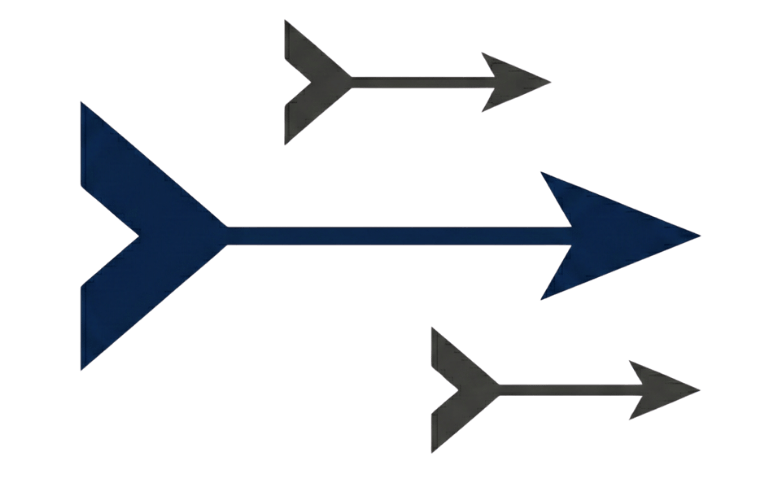

DARTS is an open ecosystem for the research and development of autonomous, resilient, and scalable drone swarms.
This project is currently in its initial phase. More information will be available soon. If you would like to learn more, please feel free to reach out through our GitHub repository.